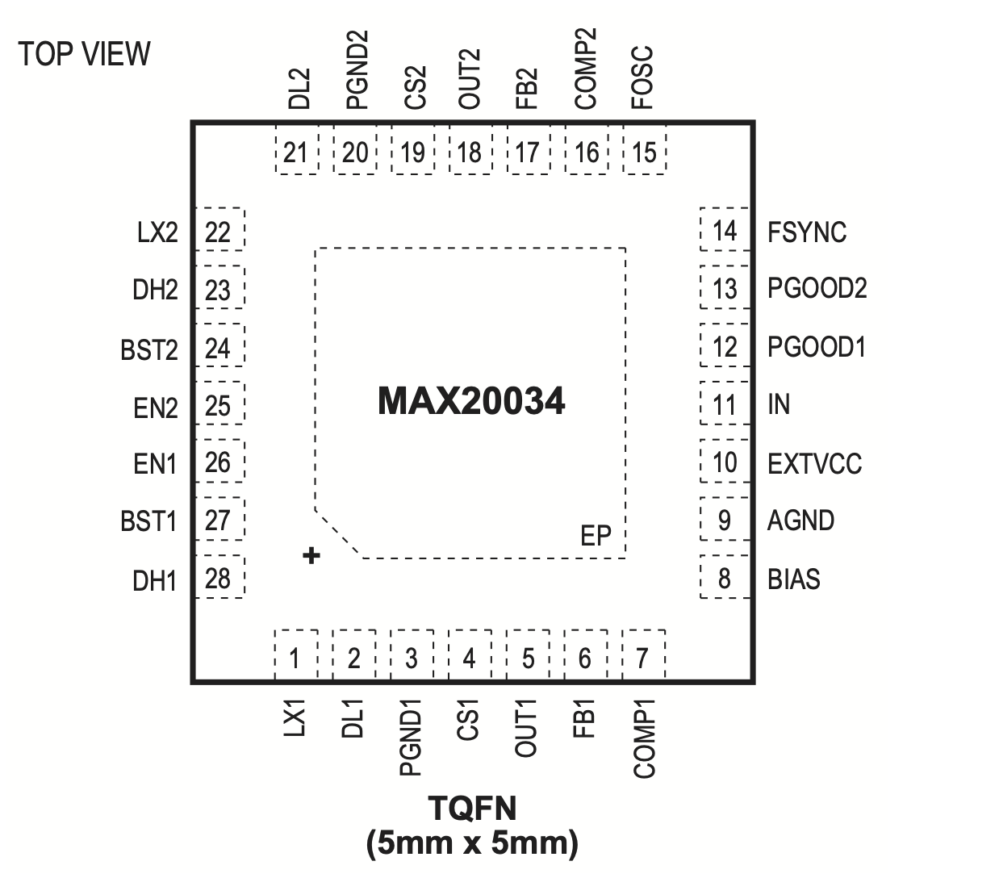

MAX20034

Pin Description
| PIN | NAME | FUNCTION |
|---|---|---|
| 1 | LX1 | Inductor Connection for Buck 1. Connect LX1 to the switched side of the inductor. LX1 serves as the lower supply rail for the DH1 high-side gate driver. |
| 2 | DL1 | Low-Side Gate-Driver Output for Buck 1. DL1 output voltage swings from VPGND1 to VBIAS. |
| 3 | PGND1 | Power Ground for Buck 1 |
| 4 | CS1 | Positive Current-Sense Input for Buck 1. Connect CS1 to the positive terminal of the current-sense element. See the Current Limiting and Current-Sense Inputs (OUT_ and CS_) and Current-Sense Measurement sections. |
| 5 | OUT1 | Output Sense and Negative Current-Sense Input for Buck 1. When using the internal preset 5V feedback-divider (FB1 = BIAS), the controller uses OUT1 to sense the output voltage. Connect OUT1 to the negative terminal of the current-sense element. See the Current Limiting and Current- Sense Inputs (OUT_ and CS_) and Current-Sense Measurement sections. |
| 6 | FB1 | Feedback Input for Buck 1. Connect FB1 to BIAS for the 5V fixed output or to a resistive divider between OUT1 and AGND to adjust the output voltage between 1V and 10V. In adjustable version, FB1 regulates to 1V (typ). See the Setting the Output Voltage in Buck Converters section. |
| 7 | COMP1 | Buck 1 Error-Amplifier Output. Connect an RC network to COMP1 to compensate. |
| 8 | BIAS | 5V Internal Linear Regulator Output. Bypass BIAS to PGND with a low-ESR ceramic capacitor of 6.8µF minimum value. BIAS provides the power to the internal circuitry and external loads. See the Fixed 5V Linear Regulator (BIAS) section. |
| 9 | AGND | Signal Ground for IC |
| 10 | EXTVCC | Switchover Comparator Input. Connect a voltage between 3.25V and 5.5V to EXTVCC to power the IC and bypass the internal bias LDO. |
| 11 | IN | Supply Input. Bypass IN with enough capacitors to supply the two out-of-phase buck converters. |
| 12 | PGOOD1 | Open-Drain Power-Good Output for Buck 1. PGOOD1 is low if OUT1 is more than 92% (typ) below the normal regulation point. PGOOD1 asserts low during soft-start and in shutdown. PGOOD1 becomes high impedance when OUT1 is in regulation. To obtain a logic signal, pull PGOOD1 up with an external resistor connected to a positive voltage lower than 5.5V. |
| 13 | PGOOD2 | Open-Drain Power-Good Output for Buck 2. PGOOD2 is low if OUT2 is more than 92% (typ) below the normal regulation point. PGOOD2 asserts low during soft-start and in shutdown. PGOOD2 becomes high impedance when OUT2 is in regulation. To obtain a logic signal, pull PGOOD2 up with an external resistor connected to a positive voltage lower than 5.5V. |
| 14 | FSYNC | External Clock-Synchronization Input. Synchronization to the controller operating-frequency ratio is 1. See the Switching Frequency/External Synchronization section. For FSYNC high, and TON < TON,MIN, ensure there is at least 50μA (including the resistor-divider current on VOUT1,2) of load current if VBIAS - VOUT > 1.3V. |
| 15 | FOSC | Frequency-Setting Input. Connect a resistor from FOSC to AGND to set the switching frequency of the DC-DC converters. |
| 16 | COMP2 | Buck 2 Error-Amplifier Output. Connect an RC network to COMP2 to compensate buck converter 2. |
| 17 | FB2 | Feedback Input for Buck 2. Connect FB2 to BIAS for the 3.3V fixed output or to a resistive divider between OUT2 and AGND to adjust the output voltage between 1V and 10V. In adjustable version, FB2 regulates to 1V (typ). See the Setting the Output Voltage in Buck Converters section. |
| 18 | OUT2 | Output Sense and Negative Current-Sense Input for Buck 2. When using the internal preset 3.3V feedback-divider (FB2 = BIAS), the buck uses OUT2 to sense the output voltage. Connect OUT2 to the negative terminal of the current-sense element. See the Current Limiting and Current-Sense Inputs (OUT_ and CS_) and Current-Sense Measurement sections. |
| 19 | CS2 | Positive Current-Sense Input for Buck 2. Connect CS2 to the positive terminal of the current-sense element. See Current Limiting and Current-Sense Inputs (OUT_ and CS_) and Current-Sense Measurement sections. |
| 20 | PGND2 | Power Ground for Buck 2 |
| 21 | DL2 | Low-Side Gate-Driver Output for Buck 2. DL2 output voltage swings from VPGND2 to VBIAS. |
| 22 | LX2 | Inductor Connection for Buck 2. Connect LX2 to the switched side of the inductor. LX2 serves as the lower supply rail for the DH2 high-side gate driver. |
| 23 | DH2 | High-Side Gate-Driver Output for Buck 2. DH2 output voltage swings from VLX2 to VBST2. |
| 24 | BST2 | Boost Flying-Capacitor Connection for High-Side Gate Voltage of Buck 2. Connect a high-voltage diode between BIAS and BST2. Connect a ceramic capacitor between BST2 and LX2. See the High-Side Gate-Driver Supply (BST_) section. |
| 25 | EN2 | High-Voltage-Tolerant, Active-High Digital Enable Input for Buck 2. Driving EN2 high enables Buck 2. |
| 26 | EN1 | High-Voltage-Tolerant, Active-High Digital Enable Input for Buck 1. Driving EN1 high enables Buck 1. |
| 27 | BST1 | Boost Flying-Capacitor Connection for High-Side Gate Voltage of Buck 1. Connect a high-voltage diode between BIAS and BST2. Connect a ceramic capacitor between BST1 and LX1. See the High-Side Gate-Driver Supply (BST_) section. |
| 28 | DH1 | High-Side Gate-Driver Output for Buck 2. DH1 output voltage swings from VLX1 to VBST1. |
| - | EP | Exposed Pad. Connect EP to ground. Connecting the exposed pad to ground does not remove the requirement for proper ground connections to PGND1, PGND2, and AGND. The exposed pad is attached with epoxy to the substrate of the die, making it an excellent path to remove heat from the IC. |